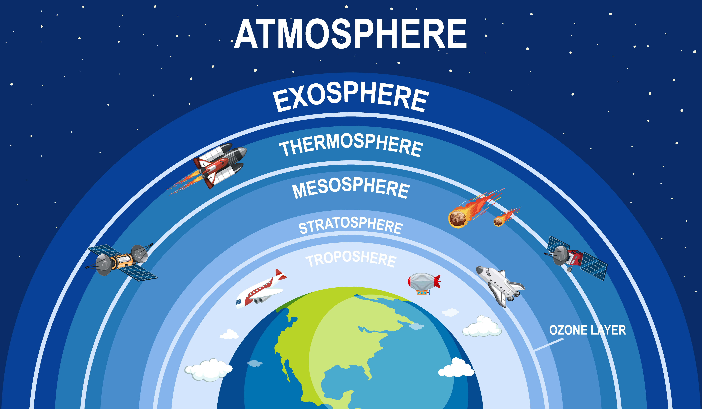

Imagen de brgfx</a> en Freepik

Imagen de brgfx</a> en Freepik

En esta situación de aprendizaje, vamos a abordar la importancia del aire y la atmósfera en la vida de la Tierra. Para ello vamos a realizar dos actividades:
Actividad 1: - Elaboración de un resumen sobre las propiedades del aire y un mural en el que se recoja la estructura en capas de la atmósfera. Ambos se realizarán en formato A4 de forma individual, si bien la búsqueda de información para realizarlos puede ser por parejas.
Actividad 2: - Realizar un mapa mental sobre los problemas del aire. Deberéis tratar cada una de las cinco problemáticas medioambientales relacionadas con la atmósfera.
Actividad 3: Prueba escrita.
Animo y manos a la obra!
Video introductorio atmósfera:
Obra publicada con Licencia Creative Commons Reconocimiento Compartir igual 4.0